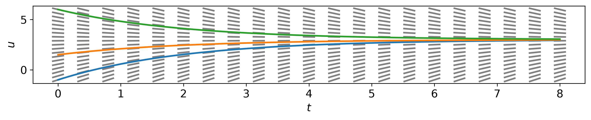
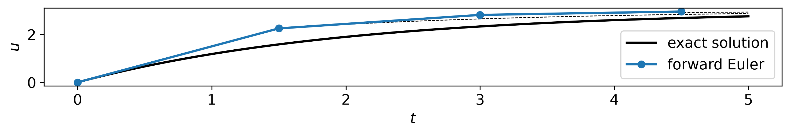
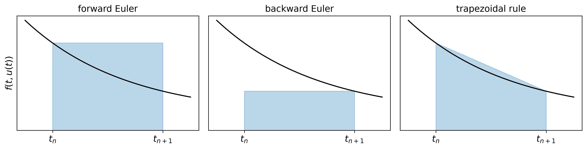
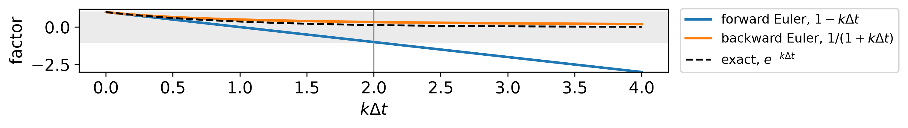
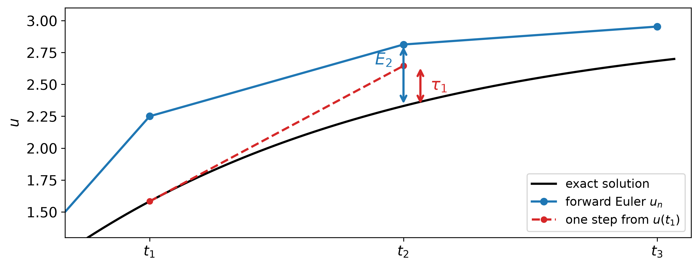

Prognostic Modelling (pea700) · Lecture 5
Every prognostic model steps forward in time. After the spatial derivatives are discretized, a large system of ODEs in time remains. Its time stepping schemes are the subject of today.
Equation numbers in brackets refer to unit 5 of the script.
Goal: state the problem all methods of today solve.
\[ \frac{\mathrm{d}u}{\mathrm{d}t} = f(t, u), \qquad u(t_0) = u_0 \tag{5.1} \]
Literature on ODEs often writes \(y\) and \(h\); we keep \(u\) and \(\Delta t\).
Diffusion \(\partial u / \partial t = D \, \partial^2 u / \partial x^2\), \(D > 0\): diffusion coefficient. Discretize only in space, as the model problem: \(x_j = j h\), \(j = 0, \dots, N+1\), unknowns \(u_j(t) \approx u(x_j, t)\) at the interior nodes, boundary values \(u_0(t) = u_{N+1}(t) = 0\):
\[ \frac{\mathrm{d}u_j}{\mathrm{d}t} = D \, \frac{u_{j-1} - 2 u_j + u_{j+1}}{h^2} , \qquad j = 1, \dots, N \]
All coefficients go into the matrix \(A\); row \(j\) holds the coefficients of equation \(j\):
\[ \frac{\mathrm{d}\vec u}{\mathrm{d}t} = - A \, \vec u , \qquad A = \begin{pmatrix} \frac{2D}{h^2} & -\frac{D}{h^2} & & \\ -\frac{D}{h^2} & \frac{2D}{h^2} & \ddots & \\ & \ddots & \ddots & -\frac{D}{h^2} \\ & & -\frac{D}{h^2} & \frac{2D}{h^2} \end{pmatrix} \tag{5.2} \]
Method of lines: \(u_j(t)\) on the line \(x = x_j\). Here \(j\) = grid point; later, subscripts = time levels.
\(A\) has the pattern of the model matrix, every entry times \(D/h^2\). New meaning: in lecture 4, \(A\) was \(\mathrm{tridiag}(-1, 2, -1)\) and \(\lambda_m\) its eigenvalues; today \(A\) is (5.2) and \(\lambda_m\) are its eigenvalues.
Insert the sine \((\vec v_m)_j = \sin (j \theta_m)\), \(\theta_m = m\pi/(N+1)\) (normalization not needed: multiples of eigenvectors are eigenvectors); row \(j\) of \(A \vec v_m\), with the addition theorem of lecture 4:
\[ \frac{D}{h^2} \Big[ -\sin\big((j-1)\theta_m\big) + 2 \sin (j\theta_m) - \sin\big((j+1)\theta_m\big) \Big] = \frac{D}{h^2} \, (2 - 2 \cos \theta_m) \, \sin (j \theta_m) \]
Same eigenvectors, the sine waves, and the eigenvalues
\[ \lambda_m = \frac{D}{h^2} \, (2 - 2\cos\theta_m) = \frac{4D}{h^2} \sin^2 \frac{\theta_m}{2} , \qquad m = 1, \dots, N \tag{5.3} \]
the eigenvalues of lecture 4 times \(D/h^2\), with the unit one over time.
Scale to length 1, \((\vec v_m)_j = \sqrt{2/(N+1)} \, \sin (j\theta_m)\): orthonormal, a basis. \(\vec u(t) = \sum_m c_m(t) \, \vec v_m\), \(c_m(t)\): coordinates, now depending on time. Insert, use \(A \vec v_m = \lambda_m \vec v_m\):
\[ \sum_m \frac{\mathrm{d}c_m}{\mathrm{d}t} \, \vec v_m = - \sum_m \lambda_m c_m \, \vec v_m \]
Coordinates are unique, so the coefficients of each \(\vec v_m\) agree:
\[ \frac{\mathrm{d}c_m}{\mathrm{d}t} = - \lambda_m \, c_m , \qquad m = 1, \dots, N \]
\(N\) separate decay equations \(\mathrm{d}u/\mathrm{d}t = -k u\), decay constant \(k = \lambda_m\) (\(k\): decay constant as in lecture 1, not the wavenumber of lecture 4).
For large \(N\): \(\theta_1\) small, \(\lambda_1 = \frac{4D}{h^2}\sin^2\frac{\theta_1}{2} \approx \frac{4D}{h^2}\frac{\theta_1^2}{4}\); \(\theta_N\) close to \(\pi\), \(\sin^2(\theta_N/2) \approx 1\):
\[ \lambda_1 \approx \frac{D \pi^2}{(N + 1)^2 h^2} \quad \text{(longest wave)} \qquad \text{to} \qquad \lambda_N \approx \frac{4 D}{h^2} \quad \text{(shortest wave)} \]
\(u(t) = u(0) \, e^{-kt}\) drops by the factor \(e\) at \(t = 1/k\). With the domain length \(\ell = (N+1)h\):
\[ \frac{1}{\lambda_1} \approx \frac{\ell^2}{\pi^2 D} , \qquad \frac{1}{\lambda_N} \approx \frac{h^2}{4 D} \]
Result. A PDE discretized in space is a system of ODEs (5.2). For diffusion it falls apart into \(N\) decay equations with the decay constants \(\lambda_m\) (5.3). The decay equation is the test problem for every time stepping scheme, and a scheme must handle all decay constants at once, from \(\lambda_1\) to \(\lambda_N\).
Lipschitz condition: a constant \(L\) with
\[ |f(t, a) - f(t, b)| \le L \, |a - b| \tag{5.4} \]
for all states \(a, b\) in the region of interest (an interval containing the solution). Then a unique solution exists, at least for some time, and depends continuously on \(u_0\) (Picard–Lindelöf, quoted). Lecture 4: \(L\) was the domain length; today \(L\) is the Lipschitz constant.
Finding \(L\): \(f\) continuously differentiable in \(u\); the interval contains all states between \(a\) and \(b\); mean value theorem, \(f(t, a) - f(t, b) = \frac{\partial f}{\partial u}(t, \xi) \, (a - b)\), so \(L = \max |\partial f / \partial u|\) (if bounded there).
Meaning: decay, \(f = -k u\): \(L = k\), and \(1/k\) is the time in which \(u\) drops by the factor \(e\). Method of lines (a system, \(L\) with a norm: script 5.6): \(L = \lambda_N \approx 4D/h^2\).
Result. \(f\) Lipschitz with constant \(L\) → unique solution. \(1/L\) is the shortest time scale of the problem.
\[ \frac{\mathrm{d}u}{\mathrm{d}t} = \frac{3 - u}{2} \tag{5.5} \]
Relaxation towards 3, e.g. a body cooling in surroundings at temperature 3. At each point \((t, u)\) a segment with the slope \(f(t, u)\); solutions follow the segments.

Think first: what can you read off without any calculation?
\(u = 3\) is an equilibrium (slope zero), and it is stable: above it the slope is negative, below it positive.
Separable: for \(u \ne 3\) divide (5.5) by \(3 - u\),
\[ \frac{1}{3 - u} \, \frac{\mathrm{d}u}{\mathrm{d}t} = \frac12 \]
Integrate over time \(s\) from \(0\) to \(t\). Right: \(\int_0^t \tfrac12 \, \mathrm{d}s = \tfrac{t}{2}\). Left: substitute \(v = u(s)\), from \(u_0\) to \(u(t)\); antiderivative of \(1/(3 - v)\) is \(-\ln|3 - v|\):
\[ \int_{u_0}^{u(t)} \frac{\mathrm{d}v}{3 - v} = - \ln |3 - u(t)| + \ln |3 - u_0| = \frac{t}{2} \quad \Longrightarrow \quad |3 - u(t)| = |3 - u_0| \, e^{-t/2} \]
Solutions cannot cross the equilibrium \(u = 3\) (uniqueness), so \(3 - u\) keeps its sign:
\[ u(t) = 3 + (u_0 - 3) \, e^{-t/2} \tag{5.6} \]
\(w = u - 3\): the distance from the equilibrium, so \(u = w + 3\). Since 3 is a constant, \(\mathrm{d}w/\mathrm{d}t = \mathrm{d}u/\mathrm{d}t\). Insert \(u = w + 3\) into (5.5):
\[ \frac{\mathrm{d}w}{\mathrm{d}t} = \frac{3 - (w + 3)}{2} = -\frac{w}{2} \]
The decay equation with \(w\) in place of \(u\) and \(k = \tfrac12\). Its solution \(w(t) = w_0 \, e^{-t/2}\), \(w_0 = u_0 - 3\), gives (5.6) again after \(u = w + 3\): the distance decays exponentially, time scale \(1/k = 2\).
Result. Exact solutions exist only for special tendencies. They are what numerical methods are verified against.
Goal: the simplest method, derived in three ways. Approximations \(u_n \approx u(t_n)\) at \(t_n = t_0 + n \Delta t\).
At \(t_0\) we know \(u_0\) and the slope \(f(t_0, u_0)\). The tangent:
\[ u = u_0 + f(t_0, u_0) \, (t - t_0) \]
Take its value at \(t_1\), repeat with the slope at \((t_1, u_1)\); each step follows the solution through its own starting point (dashed):
\[ u_{n+1} = u_n + \Delta t \, f(t_n, u_n) \tag{5.7} \]

Replacing the derivative in (5.1) at \(t_n\) by the forward difference, and the unknown exact values \(u(t_n)\), \(u(t_{n+1})\) by the computed \(u_n\), \(u_{n+1}\), gives (5.7) again:
\[ \frac{u_{n+1} - u_n}{\Delta t} = f(t_n, u_n) \]
The forward difference is of first order.
Integrating the tendency from \(t_n\) to \(t_{n+1}\), without any approximation:
\[ u(t_{n+1}) = u(t_n) + \int_{t_n}^{t_{n+1}} f\big(t, u(t)\big) \, \mathrm{d}t \tag{5.8} \]
The integrand contains the unknown solution. Forward Euler: a rectangle with the height \(f\big(t_n, u(t_n)\big)\) at the left end, with the computed \(u_n\) in place of the unknown \(u(t_n)\). Better schemes = better quadrature rules.

Left end: forward Euler. Right end: backward Euler. Mean of both: trapezoidal rule, the start of Heun’s method.
Relaxation (5.5) with \(u_0 = 0\), error at \(t = 4\), exact from (5.6): \(u(4) = 3 - 3 e^{-2}\):
dt = 1.00: u(4) = 2.81250, error = 0.21851
dt = 0.50: u(4) = 2.69966, error = 0.10567
dt = 0.25: u(4) = 2.64580, error = 0.05180Halving \(\Delta t\) halves the error.
Result. Forward Euler (5.7) follows the tangent, replaces the derivative by a forward difference, or integrates the tendency with a rectangle. It is explicit: the new value follows directly from known values. Its error is proportional to \(\Delta t\).
Goal: the simplest implicit method, why one would use it, and what it costs.
Backward difference at the new time \(t_{n+1}\), or in (5.8) the rectangle with the height at the right end:
\[ \frac{u_{n+1} - u_n}{\Delta t} = f(t_{n+1}, u_{n+1}) \]
\[ u_{n+1} = u_n + \Delta t \, f(t_{n+1}, u_{n+1}) \tag{5.9} \]
\(u_{n+1}\) appears on both sides, inside the tendency: an equation that defines \(u_{n+1}\) implicitly and must be solved in every step.
Decay \(f = -k u\), \(k > 0\): (5.9) is linear in \(u_{n+1}\), solved by hand:
\[ u_{n+1} = u_n - k \, \Delta t \, u_{n+1} \quad \Longrightarrow \quad u_{n+1} = \frac{u_n}{1 + k \, \Delta t} \tag{5.10} \]
Forward Euler for comparison: \(u_{n+1} = (1 - k \Delta t) \, u_n\).
Think first: what happens to the two factors for large \(k \Delta t\)?

Backward: in \((0, 1)\) for every \(\Delta t\). Forward: \(< 0\) for \(k\Delta t > 1\) (sign change), \(< -1\) for \(k \Delta t > 2\) (growth). Method of lines, \(k = \lambda_N \approx 4D/h^2\): forward Euler needs \(\Delta t < 2/(4D/h^2) = h^2/(2D)\).
Same test as forward Euler: (5.5) with \(u_0 = 0\), error at \(t = 4\). The tendency \((3 - u)/2\) is linear, so (5.9) is solved by hand:
\[ \begin{aligned} & u_{n+1} = u_n + \Delta t \, \frac{3 - u_{n+1}}{2} \quad \Longrightarrow \quad u_{n+1} \left( 1 + \frac{\Delta t}{2} \right) = u_n + \frac{3 \Delta t}{2} \\ & \quad \Longrightarrow \quad u_{n+1} = \frac{u_n + 3 \Delta t / 2}{1 + \Delta t / 2} \end{aligned} \]
| \(\Delta t\) | forward Euler \(u_n - u(4)\) | backward Euler \(u_n - u(4)\) |
|---|---|---|
| 1.0 | \(+0.219\) | \(-0.187\) |
| 0.5 | \(+0.106\) | \(-0.097\) |
| 0.25 | \(+0.052\) | \(-0.050\) |
For a linear tendency Newton finds the root in one update; to see it at work we need a nonlinear tendency. Test problem: \(\mathrm{d}u/\mathrm{d}t = -u^2\), \(u(0) = 1\), exact \(u = 1/(1+t)\) (check: \(u' = -1/(1+t)^2 = -u^2\)).
Write (5.9) as a root finding problem for the unknown \(U = u_{n+1}\):
\[ G(U) = U - u_n - \Delta t \, f(t_{n+1}, U) = 0 \]
With \(G'(U) = 1 - \Delta t \, \partial f / \partial u \ne 0\), one Newton iteration (lecture 3), started from \(U^{(0)} = u_n\); the superscript \((m)\) counts iterations, not waves:
\[ U^{(m+1)} = U^{(m)} - \frac{U^{(m)} - u_n - \Delta t \, f\big(t_{n+1}, U^{(m)}\big)}{1 - \Delta t \, \dfrac{\partial f}{\partial u}\big(t_{n+1}, U^{(m)}\big)} \]
Result. Backward Euler (5.9) is implicit: an equation per step, Newton for a nonlinear tendency, a linear system for a system. In return it decays for every \(\Delta t\) (5.10). It is of first order, like forward Euler.
Goal: how the error of one step determines the error at the end; the order of a method.
Global error, what we care about:
\[ E_n = u(t_n) - u_n \]
Local truncation error \(\tau_n\): insert the exact values \(u(t_n)\), \(u(t_{n+1})\) into the formula of the method; what is left over is \(\tau_n\), the error made in one step. Explicit method: the error of one step from the exact value (picture on the next slide). Some textbooks divide by \(\Delta t\): then all local orders are lower by one. Round-off: much smaller for practical \(\Delta t\), neglected.
Taylor with remainder, \(u\) twice continuously differentiable, \(\xi_n\) between \(t_n\) and \(t_{n+1}\):
\[ u(t_{n+1}) = u(t_n) + \Delta t \, u'(t_n) + \frac{\Delta t^2}{2} u''(\xi_n) \]

Relaxation (5.5), \(u_0 = 0\), \(\Delta t = 1.5\). \(E_2\): numerical vs. exact solution after two steps. \(\tau_1\): one Euler step that starts on the exact solution at \(t_1\) vs. the exact solution. \(E_2 > \tau_1\): it contains both steps’ errors, the first one carried along by the second.
\(u\) solves (5.1), so \(u'(t_n) = f\big(t_n, u(t_n)\big)\):
\[ u(t_{n+1}) = \underbrace{u(t_n) + \Delta t \, f\big(t_n, u(t_n)\big)}_{\text{one forward Euler step from the exact solution}} + \underbrace{\frac{\Delta t^2}{2} u''(\xi_n)}_{\tau_n} \tag{5.11} \]
\(M\): the largest \(|u''|\) on the interval of interest. Then \(|\tau_n| \le M \Delta t^2 / 2\).
Backward Euler: expand around \(t_{n+1}\), \(\eta_n\) between \(t_n\) and \(t_{n+1}\), solve for \(u(t_{n+1})\):
\[ u(t_{n+1}) = \underbrace{u(t_n) + \Delta t \, f\big(t_{n+1}, u(t_{n+1})\big)}_{\text{backward Euler formula with the exact values}} - \frac{\Delta t^2}{2} u''(\eta_n) \]
\(\tau_n = -\frac{\Delta t^2}{2} u''(\eta_n)\): same size, opposite sign.
One backward Euler step from \(u(t_n)\) gives the root \(\tilde U\) of \(\tilde U = u(t_n) + \Delta t \, f(t_{n+1}, \tilde U)\). Subtract from the expansion; mean value theorem, \(\zeta\) between \(\tilde U\) and \(u(t_{n+1})\):
\[ u(t_{n+1}) - \tilde U = \frac{\tau_n}{1 - \Delta t \, \frac{\partial f}{\partial u}(t_{n+1}, \zeta)} \]
Denominator \(1 + O(\Delta t)\): the error of one step and \(\tau_n\) agree up to order \(\Delta t^3\); both are of order \(\Delta t^2\).
Chain rule on \(u' = f\big(t, u(t)\big)\):
\[ u'' = \frac{\partial f}{\partial t} + \frac{\partial f}{\partial u} \, u' = \frac{\partial f}{\partial t} + \frac{\partial f}{\partial u} \, f \tag{5.12} \]
From \(t_0\) to an end time \(T\): \((T - t_0) / \Delta t\) steps of size \(M \Delta t^2 / 2\) would give \((T - t_0) M \Delta t / 2\). But each error is carried along and changed by the later steps.
Step 1: subtract the Euler step (5.7) from (5.11):
\[ \underbrace{u(t_{n+1}) - u_{n+1}}_{E_{n+1}} = \underbrace{u(t_n) - u_n}_{E_n} + \Delta t \left[ f\big(t_n, u(t_n)\big) - f(t_n, u_n) \right] + \tau_n \]
If \(u(t_n)\) and \(u_n\) lie in the region of interest, the bracket is at most \(L \, |E_n|\) by (5.4); with the triangle inequality:
\[ |E_{n+1}| \le (1 + L \Delta t) \, |E_n| + |\tau_n| \tag{5.13} \]
Each step multiplies the existing error by at most \(1 + L \Delta t\) and adds the new local error \(\tau_n\).
Step 2: \(E_0 = 0\), \(q = 1 + L \Delta t\), apply (5.13) for \(n = 0, 1, 2, \dots\):
\[ |E_1| \le |\tau_0|, \qquad |E_2| \le q \, |\tau_0| + |\tau_1|, \qquad |E_3| \le q^2 |\tau_0| + q \, |\tau_1| + |\tau_2|, \qquad \dots \]
\(\tau_j\) is multiplied by \(q\) once per later step: \(|E_n| \le \sum_{j=0}^{n-1} q^{\,n-1-j} |\tau_j|\).
Each \(|\tau_j| \le \tau_{\max} = M \Delta t^2/2\); index \(i = n-1-j\); a geometric series, sum formula needs \(q - 1 = L\Delta t > 0\) (for \(L = 0\) the sum is \(n\tau_{\max}\)):
\[ |E_n| \le \tau_{\max} \sum_{i=0}^{n-1} q^i = \tau_{\max} \, \frac{q^n - 1}{q - 1} = \frac{M \Delta t^2}{2} \cdot \frac{(1 + L \Delta t)^n - 1}{L \Delta t} \]
Step 3: \(1 + x \le e^x\), so \((1 + L\Delta t)^n \le e^{n L \Delta t}\), and \(n \Delta t = t_n - t_0\). One \(\Delta t\) cancels:
\[ |E_n| \le \frac{M}{2L} \left( e^{L (t_n - t_0)} - 1 \right) \Delta t \tag{5.14} \]
Step 1: the bracket now contains the new error, at most \(L|E_{n+1}|\). Move it to the left:
\[ (1 - L \Delta t) \, |E_{n+1}| \le |E_n| + |\tau_n| \]
Step 2: for \(L\Delta t \le \tfrac12\) divide; \(r = 1/(1 - L\Delta t)\): \(\ |E_{n+1}| \le r|E_n| + r|\tau_n|\), the recursion of forward Euler with \(r\), \(r|\tau_n|\). With \(|\tau_j| \le \tau_{\max}\) and \(\frac{r\tau_{\max}}{r-1} = \frac{\tau_{\max}}{L\Delta t}\): \(\ |E_n| \le \frac{M}{2L} (r^n - 1)\Delta t\).
Step 3: \(x = L\Delta t \le \tfrac12\): \(r = 1 + \frac{x}{1-x} \le e^{x/(1-x)} \le e^{2x}\), so \(r^n \le e^{2L(t_n - t_0)}\):
\[ |E_n| \le \frac{M}{2L} \left( e^{2 L (t_n - t_0)} - 1 \right) \Delta t , \qquad L \Delta t \le \tfrac12 \]
Again a constant times \(\Delta t\): order one.
Any one-step method \(u_{n+1} = u_n + \Delta t \, \Phi(t_n, u_n, \Delta t)\), increment function \(\Phi\) Lipschitz with \(L_\Phi > 0\), local error \(\le C \Delta t^{p+1}\), \(C\) independent of \(\Delta t\):
\[ |E_n| \le \frac{C}{L_\Phi} \left( e^{L_\Phi (t_n - t_0)} - 1 \right) \Delta t^p \tag{5.15} \]
Result. Local error of order \(\Delta t^{p+1}\) → global error of order \(\Delta t^p\): one power lost, because \(1/\Delta t\) steps are needed. The order of the method is \(p\). Both Euler methods: \(p = 1\).
Goal: explicit methods with local error \(O(\Delta t^3)\) or better, by (5.15) of order 2 or higher. (\(e = O(\Delta t^p)\): \(|e| \le C\Delta t^p\) for small \(\Delta t\), lecture 3.)
The trapezoidal rule for (5.8), with the computed \(u_n\), \(u_{n+1}\) in place of the exact values, gives the implicit trapezoidal method:
\[ u_{n+1} = u_n + \frac{\Delta t}{2} \left[ f(t_n, u_n) + f(t_{n+1}, u_{n+1}) \right] \tag{5.16} \]
Replace the unknown \(u_{n+1}\) inside by a forward Euler predictor, then apply (5.16) as corrector. Stages \(s_1, s_2\): the values of the tendency in one step (\(s\) for slope):
\[ \begin{aligned} s_1 &= f(t_n, u_n) , \\ s_2 &= f(t_n + \Delta t, \; u_n + \Delta t \, s_1) , \\ u_{n+1} &= u_n + \frac{\Delta t}{2} (s_1 + s_2) \end{aligned} \tag{5.17} \]
Think first: the predictor is only of first order. Can the method be of second order?
\[ \begin{aligned} s_1 &= f(t_n, u_n), \qquad s_2 = f(t_n + a \, \Delta t, \; u_n + c \, \Delta t \, s_1), \\ u_{n+1} &= u_n + \Delta t \, (b_1 s_1 + b_2 s_2) \end{aligned} \tag{5.18} \]
The exact solution, Taylor with \(u' = f\) and (5.12), \(u'' = f_t + f_u f\):
\[ u(t_n + \Delta t) = u_n + \Delta t \, f + \frac{\Delta t^2}{2} \big( f_t + f_u f \big) + O(\Delta t^3) \]
Taylor in two variables, to first order: \(f(t_n + \delta t, u_n + \delta u) = f + \delta t \, f_t + \delta u \, f_u + R\), remainder \(R\) made of \(\delta t^2\), \(\delta t \, \delta u\), \(\delta u^2\). With \(\delta t = a \Delta t\) and \(\delta u = c \Delta t \, f\), both of order \(\Delta t\), \(R = O(\Delta t^2)\):
\[ s_2 = f + a \, \Delta t \, f_t + c \, \Delta t \, f_u f + O(\Delta t^2) \]
Insert into (5.18):
\[ u_{n+1} = u_n + \Delta t \, (b_1 + b_2) \, f + \Delta t^2 \, b_2 \big( a \, f_t + c \, f_u f \big) + O(\Delta t^3) \]
Match the coefficients of \(f\), \(f_t\) and \(f_u f\) in the two expansions:
\[ b_1 + b_2 = 1 , \qquad b_2 \, a = \frac12 , \qquad b_2 \, c = \frac12 \tag{5.19} \]
Local error \(O(\Delta t^3)\) → second order. The last two give \(a = c\): look ahead equally in time and state.
| Method | \(a = c\) | \(b_1\) | \(b_2\) | if \(f\) depends only on \(t\) |
|---|---|---|---|---|
| Heun | 1 | \(\tfrac12\) | \(\tfrac12\) | trapezoidal rule |
| Midpoint | \(\tfrac12\) | 0 | 1 | midpoint rule |
| Forward Euler | — | 1 | 0 | violates two conditions: first order |
Two equations for three parameters: a whole family of second-order methods.
Midpoint method: half an Euler step, then the tendency there for the full step: \(u_{n+1} = u_n + \Delta t \, f\big(t_n + \tfrac12 \Delta t, \; u_n + \tfrac12 \Delta t \, s_1\big)\). If \(f\) depends only on \(t\): Heun gives \(\tfrac{\Delta t}{2}[f(t_n) + f(t_{n+1})]\) (trapezoidal rule), midpoint \(\Delta t \, f(t_n + \tfrac12\Delta t)\) (midpoint rule).
\(n_s\) stages, computed one after the other, \(i = 1, \dots, n_s\): explicit Runge–Kutta methods
\[ s_i = f\Big( t_n + a_i \Delta t, \; u_n + \Delta t \sum_{j=1}^{i-1} g_{ij} \, s_j \Big) , \qquad u_{n+1} = u_n + \Delta t \sum_{i=1}^{n_s} b_i \, s_i \]
RK4: \(a_2 = a_3 = \tfrac12\), \(a_4 = 1\), \(g_{21} = g_{32} = \tfrac12\), \(g_{43} = 1\), others 0, \(b = (\tfrac16, \tfrac26, \tfrac26, \tfrac16)\):
\[ \begin{aligned} s_1 &= f(t_n, u_n) , \\ s_2 &= f\big(t_n + \tfrac12 \Delta t, \; u_n + \tfrac12 \Delta t \, s_1\big) , \\ s_3 &= f\big(t_n + \tfrac12 \Delta t, \; u_n + \tfrac12 \Delta t \, s_2\big) , \\ s_4 &= f(t_n + \Delta t, \; u_n + \Delta t \, s_3) , \\ u_{n+1} &= u_n + \frac{\Delta t}{6} (s_1 + 2 s_2 + 2 s_3 + s_4) \end{aligned} \tag{5.20} \]
Result. Runge–Kutta methods reach higher order with several evaluations of the tendency per step; the coefficients follow from matching Taylor series (5.19). Heun and midpoint: order 2; RK4 (5.20): order 4, the highest order without extra stages.
euler_forward and euler_backward (templates for Exercise 5); script 5.4 (errors), as far as not covered todaytoolbox.pyPrognostic Modelling (pea700) · WiSe 2026/27